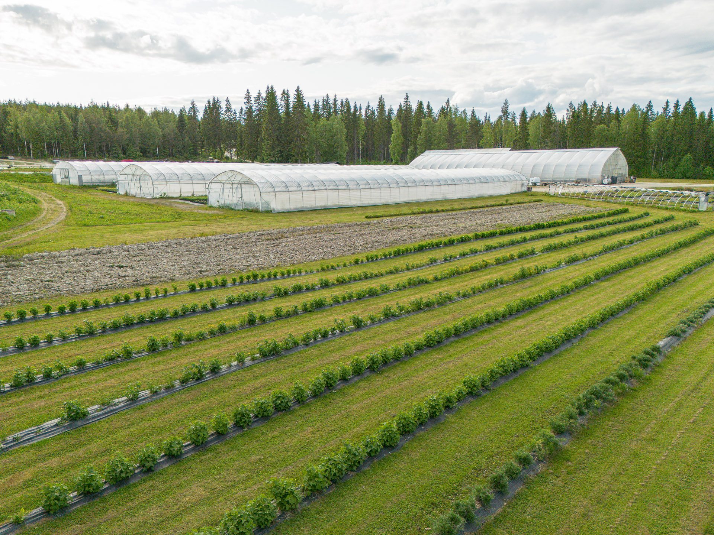
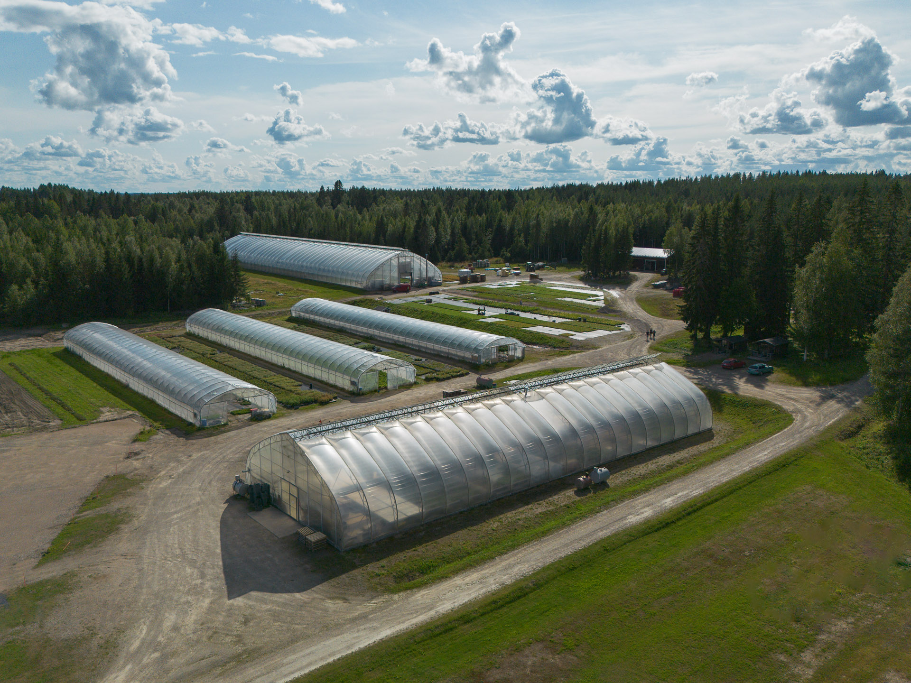

Peuraniemen Taimitarha
Tietoa meistä
Peuraniemen Taimitarha on vuonna 1996 perustettu marjakasvien tuotantoon erikoistunut taimisto. Paikkamme sijaitsee Nuasjärven rannalla noin 10 km päässä Kajaanin keskustasta. Kasvukaudella yrityksessä työskentelee yrittäjien lisäksi 3-4 kokoaikaista kausityöntekijää, joiden lisäksi opiskelijoita ja koululaisia.
Historiamme alkaa avomaalta, mutta hyvin nopeasti lisäyksissä siirryttiin kasvihuoneisiin, missä nuorelle taimelle on paremmat olosuhteet sen kasvutaipaleen alkumetreillä. Emokasvimme sijaitsevat suurimmaksi osaksi kasvihuoneissa rajatussa kasvualustoissa tautiturvallisuuden takaamiseksi, mutta isompien pensaiden kuten herukan ja tyrnin emokasvit sijaitsevat avomaalla. Tuotantomme alkoi aikoinaan varmennettujen mansikan taimien tuotannolla, ja valikoimamme on laajentunut vuosien saatossa kaikkiin yleisimpiin marjakasveihin. Mansikka on edelleen päätuotteemme niin viljelijä- kuin myymäläkaupoissa.
Markkina-alueemme on koko Suomi ja asiakaskuntamme koostuu pääasiassa ammattiviljelijöistä, puutarhamyymälöistä sekä viherrakentajista. Tuotamme markkinoille vakiintuneita taimikokoja pienemmistä viljelijätaimista isompiin myymäläkokoihin, mutta ketteränä taimistona taivumme myös tilaustuotteisiin asiakkaan toiveiden mukaan.
Viljelytekniikkamme on nykyaikaista ja kehitämme niitä jatkuvasti eteenpäin. Rautaa päivitetään hiljalleen parempaan ja meillä on joka kesä useampia viljelykokeita käynnissä, joista saaduilla tiedoilla pyritään viemään tuotantoa tehokkaampaan suuntaan. Arkisten työtehtävien ohella jatkuva kehittäminen pitää sekä mielen että toiminnan virkeänä.
Ota yhteyttä